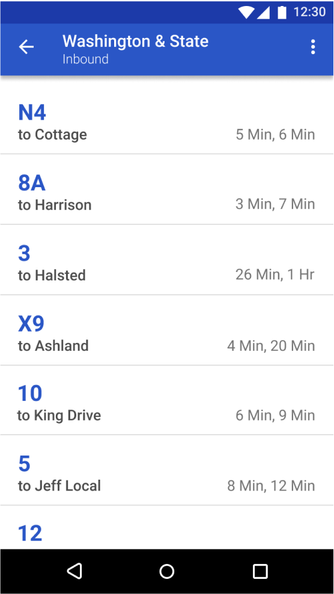

BusyBus
BusyBus is a public transit application that helps bus riders determine what time their bus is arriving to plan trips efficiently.

Design Roles
- UX Design
- Visual Design
- Branding & Identity
Deliverables
- User Surveys
- Personas
- Competitive Analysis
- Concept & Brand Identity
- User Stories
- User Flows
- Wireframes
- User Testing
Specifications
- Tools & Software
- Figma
- UsabilityHub
- Duration: 2 weeks
Problem: Addition of New Bus Routes Cause Rider Confusion
Due to the addition of new bus routes, there are different buses stopping at the same bus stop. Bus riders need to know if the approaching bus is the bus they need to get on, or what time their desired bus is arriving at.
Solution: Bus Arrival Times Helps Riders Plan Efficient Trips
Design an app for bus riders to see what time their bus is arriving at the current bus stop. The app should show:
1) Bus number and terminal name
2) Show bus arrival time in minutes
3) Ability to see when the following bus is arriving
What Public Transit Apps Are Out There?
Competitive Analysis
In order to better understand the competition and the client's required features for this product, I did a competitive analysis of two public transit apps Moovit and Google Maps
Moovit

Suggests the bus route to get to the desired destination
Does not show what direction the bus is bound for.
The mintues next to the bus number may be misleading since it shows the minutes it takes to get to the destination, and not in how many minutes the bus will arrive
Google Maps

Recommends a bus route to get to the desired destination
Does not fully show the whole bus route name/direction
The minutes next to the bus number may be misleading since it shows the minutes it takes to get to the destination, and not in how many minutes the bus will arrive
These platforms are well established within the public transit app space. They have a great set of features that keep users satisfied. However, improvements can be made in regards to the display of bus information. This allows a newcomer to enter the market. As a newcomer, BusyBus can provide clear bus information to the rider and help them better plan and schedule trips that require public transit.
User Survey
Before determining the features that would be a part of BusyBus, I conducted a user survey to find out if public transit riders feel that current public transit apps can be improved.
Can current public transit apps be improved?
The majority of public transit app users believe improvements could be made on the current app they are using.
Top 3 Features Users Want To See In An Improved Public Transit App
The survey results indicate a majority of users value features such as seeing real time updates in regards to alerts on bus routes, as well as seeing when the following bus is arriving.
Top 2 Features To Include in BusyBus First Iteration
Alerts for bus routes
Arrival time of current bus and next bus

Additional features that users would also like to see in an improved public transit app include being able to see how long it would take to get to the bus stop from their current location. This can help users better plan their trips. These additional features will be factored into later iterations of this app.
The user survey has helped identify the first set of features for BusyBus. BusyBus will help users identify different buses and arrival times due to the bus route expansion in the city.
Identifying the Users
02 Strategy
Based on the user research results, two personas were created to help further identify the direction of this new public transit app.
Aleena, 32 years old - Sr. Software Engineer
"There are so many buses that stop at my stop, it would be great to know when the bus I want to get on is arriving. Also if there were any delays, I would like to know in advance."
Goals
- Being able to see what time the desired bus is arriving at, as well as what time the next bus is arriving
- Being able to see any sudden changes in the bus schedule
Frustrations
- Delayed buses causes delay in getting to work
- Not knowing about bus delays in advance in order to find alternative modes of transportation
- Changes in bus routes might mean getting on the wrong bus
Kevin, 22 years old - Business Student
"I take the bus to get to my part-time job. I need to know the intervals of my bus in case I miss the first one so I can give my co-workers a heads up I might be running a few minutes behind."
Goals
- Being able to see what time the desired bus is arriving at, as well as what time the next bus is arriving.
- Being able to see sudden changes in the bus schedule
Frustrations
- Delayed buses causes delay in getting to work
- Desired bus that is arriving is labeled "Out of Service", therefore rider has to wait for another bus
- Not knowing if multiple buses run through the desired destination.
- Hard to keep track of changes for a file
User Stories
Before the design started it was important to create user stories and highlight the important tasks to create a prodcut that would be viable. A list of user stories were created with the high priorty tasks being the main focus for the first iteration.
High Priority Tasks For A BusyBus New User
- As a new user, I want to see all bus routes at a specific bus stop.
- As a new user, I want to find out what time my bus will be arriving.
- As a new user, I want to be notified of any alerts/delays on my bus route.
- As a new user, I want to see a map of the bus routes.
Prototyping for BusyBus
03 Information Architecture
Before the actual designing started, it was important to create a paper prototype of the app with features that would allow users to complete the high priority tasks. The results from this user test will be used to help build out the actual app.
Usability Test
The task for this usability test with the paper prototype was for the user to find out when the N4 bus was arriving at the Washington & State stop. The 3 users were able to do so by clicking on the Washington & State stop under "nearby stops," and were able to navigate to the next screen showing all 7 bus lines.
Key Findings From Usability Test
Users wanted to know what was the purpose of the "sort by" field next to near by stops. They wanted to know what was being sorted. Ideally in a second round of testing, this feature would be tested to see if it adds any value for the user.
Users were not sure what was meant by "Washington & State." It was not clear to users that it was a bus stop and not a bus line.

Under the favorite stops section it currently shows the bus stop name rather than the bus number. In the next iteration this will be changed to show the bus line number that users frequent the most to make that information compatible with the bus arrival time that is listed.
Users were confused by what the "up and down" arrows meant. This was meant to change the direction of where the buses were headed, for example "inbound" vs. "outbound". However this is feature confused users and will be removed and not included in the final design.
With the results from the usability test, the next step is to design the screen that users will use to determine what time their bus is arriving.
Branding & Identity
04 Colors
To convey a feeling of trust and reliability for BusyBus, the main color that will be used is blue. Users expect accuracy and dependability when they use the public transit app to plan their trip, and blue can help get this message across. Grey colors will be used for the text.
Primary Brand Colors for BusyBus
Main Color
HEX # 2A56C6
RGB 42/ 86/ 198
Main Color
HEX # 4D4D4D
RGB 77/ 77/ 77
Main Color
HEX # 8B8A93
RGB 139/ 138/ 147
Alert Color
HEX # E46B75
RGB 228/ 107/ 117
Red is used as an alert color to signal to users any unexpected changes that may occur regarding the bus schedule.
Typography
Roboto was chosen as a typeface for the BusyBus app. This version of BusyBus is designed for Android and Roboto is a simple typeface developed for Android systems. The basic and clean look of Roboto helps deliver the bus information to the user in a straightforward manner.
05 Visual Design
High Fidelity Mock Ups
With wireframes in place and a defined brand identity, I went on to develop the high fidelity mockups of BusyBus. The screen that will be mock up is the screen where users will see what bus is arriving and the time it will arrive. The following are screens of the design progression.
First Iteration
There is not enough distinction between the bus number and desitination. There needs to be more hierarchy
Second Iteration
Distinction between the bus number and destination is clearer, but there is still opportunity to improve on the type of information being displayed.
Third Iteration
There is a clear distinction between bus number and destination. The alert info is being displayed to the bus rider as well.
Coding the BusyBus Screen
Using HTML & CSS
To further move this prototype along, the next step was to translate the design into code. The overall structure of this code is written semantically to allow for organization and clarity when going through the code. There are 3 sections for this screen: the header, the bus list, and the bottom navigation bar. The main component showing the arrival time of the buses was coded using list items.
Next Steps for BusyBus
Moving Forward
Some things to consider next is incorporating a map somewhere on the solution screen because this was a high priority tasks that was missed in the process. In addition, even though the solution screen has an established hierarchy, that can still be pushed further. For example, having a clearer distinction between buses that are in service versus out of service. This could be done by completely highlighting the out of service buses section in a muted color to indicate that they are not running.
Further steps would be to test how users prefer the bus time to show up on the app. Would users prefer to see the actual arrival time of the bus such as "11:25 am", or would they prefer to see it as what it is currently, in time intervals such as the bus is arriving in "5 min, 20 min".
These are a few things to consider as the project continues to develop and more users needs come to light through additional rounds of user testing.
Thank you for stopping by!